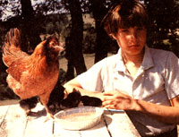

Issue # 103 - January/February 1987
MOTHER'S CHILDREN
Bantam chickens are fun to raise!
MOTHER knows that many youths undertake interesting, original projects and start their own small businesses. To support these endeavors, we buy and publish well-written articles from children and teenagers concerning their efforts. However, we recommend that all young authors query (that is, send us a letter telling about the story they'd like to do) before writing a full article. Send your queries to Mother's Children, Mother Earth News, P.O. Box 70, Hendersonville, NC 28793.
Hello! I'm Dan Barker, and I've been raising bantam chickens for three years. I keep bantams because they are small, friendly, and colorful. They give eggs for the table and manure for the garden. And they don't even need a lot of living space.
After you've purchased your bantams, take them home to your barn or shed or garage. The birds' area should have chicken wire on the sides and top. Put your new bantams in the wired-off area with plenty of feed and water. Add some apple crates for hens to nest in. Keep them penned up for about two days. After that, they'll consider that place their home and won't fly off if you let them out.
I keep my bantam cage in a barred stall. If a stray dog tries to catch them, they can slip quickly through the bars into their safe stall. Some people trim their chickens' wing feath ers so they can't fly off. I don't do this. That way if my bantams are in danger far from the barn, they can fly into a tree or onto a fence.
I spray some roost paint (available at a feed mill) on the chickens' roosts to prevent lice and other diseases. I also give the birds a large tray of hardwood ashes-which I clean out every two months. They take dust baths in that to "wash" off parasites.
Bantams are great at setting on eggs (many chickens aren't). I count my hens every day so I'll notice if one starts wanting to make a nest (gets "broody") and begins laying her eggs in a separate place from the rest of the flock. If you notice one is missing, look in any hiding spots that have straw or hay until you find her nest.
When you have a broody hen, mark the eggs you want hatched with a pencil and take out the rest. You can even take other hens' eggs-up to 12 total-and give them to her to hatch. After 21 days have passed, move the broody hen and nest into a crate in a stall with feed and water. Other than that, disturb her as little as possible. If you startle her suddenly, she might reject the eggs.
Hatching is fun to watch. The chick pecks neatly down the center of the egg until the shell breaks right in two. The chick then sticks its head out and starts peeping. It doesn't stop this sound for one month-the constant peeping helps keep the mother from pecking the baby. Be sure to take out the shell so the mother does not eat it, or she may start to peck the unhitched eggshells.
After the chicks have hatched, move the water and feed (use chick feed, available from a feed mill) close to them. The mother will teach them how to eat and drink. Some chicks don't eat for three days. That's OK.
I feed my bantams poultry mash-ground-up corn, minerals, and supplement from the local feed mill. I mix hot water with this ration and feed them twice daily, as much feed as they want. I also give them chopped-up grass and a handful of grit (a digestive aid) every day. And I make sure the adults' feeders and waterers are not under their roosts. Otherwise, the chickens' manure will foul them.
If you have lots of land for your bantams, cut down on their feed in the summer and let them roam for worms and other things they find. This is called ranging and is very good for your flock. [EDITOR'S NOTE: See John Vivian's "Racing Free-Range Chickens" in MOTHER NO. 88 for more information.]
Some bantam breeds are very wild, but I try to buy or make mine as tame as possible. I sit with my chickens about a half-hour every day so they get very used to me. I play with the little chicks and let them perch on my arms, shoulders, and legs.
You can band your bantams' legs to identify them, but I just give mine identifying names like "Longtail," "Pigeon" (she looks like one), "Sunset" (a bright orange hen), and "Torch" (one with fluorescent red feathers).
A dog can be a big help. I have a chocolate Lab, a soft-mouthed dog. One time one of my bantams flew very far away and landed in a field of long grass. My Lab followed it and found where it landed. Then he grabbed its neck and waited until I picked it up. The bird wasn't hurt at all!
I can tell you for sure that I've really liked raising bantams. If you try it, you'll find out that a bird can be just as nice to hold and get to know as a kitten or a rabbit.
|
 |
|
|